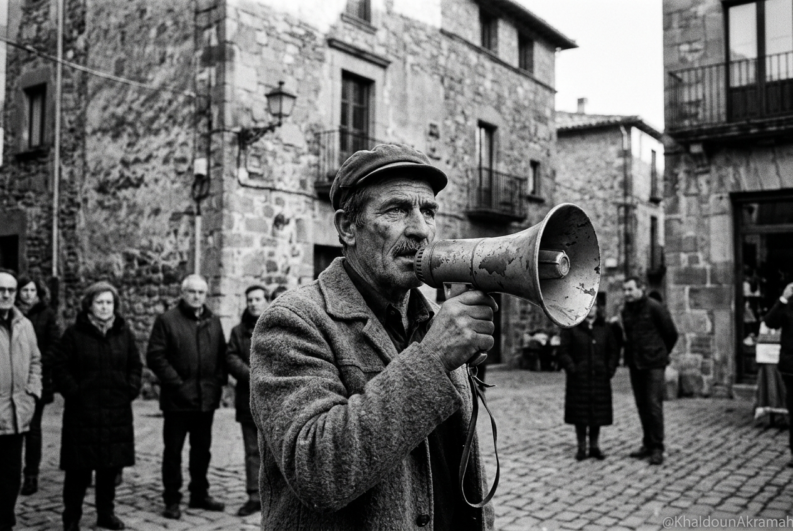

المشهد الأول
نداء الوفاء: الحناجر تكسر الصمت
مع تباشير صباح السادس من أيلول 2011، توشحت المدن والبلدات السورية برداء العهد المقدس. لم يكن الخروج للمظاهرة خياراً سياسياً عابراً، بل كان واجباً أخلاقياً ووفاءً مطلقاً لشهداء الأيام الأولى. انطلقت الحناجر عبر مكبرات الصوت اليدوية البسيطة تصدح في الساحات العامة، معلنة أن كل شهيد يسقط برصاص عصابة الأسد لا يزيد الثوار إلا ثباتاً ويقيناً بأن ساعة الخلاص قد دقت.
توثيق تناظري: Leica M6 · عدسة 35mm f/2 · فيلم Kodak Tri-X 400
